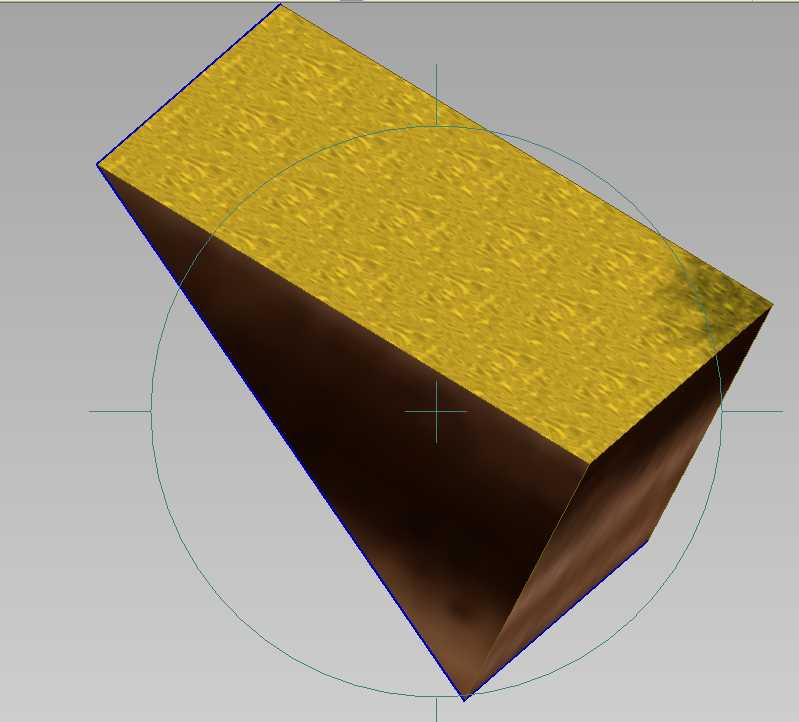
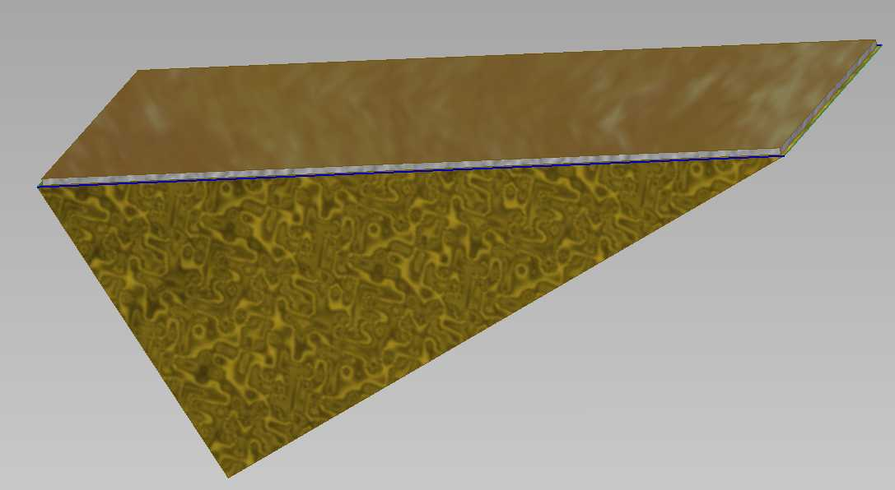
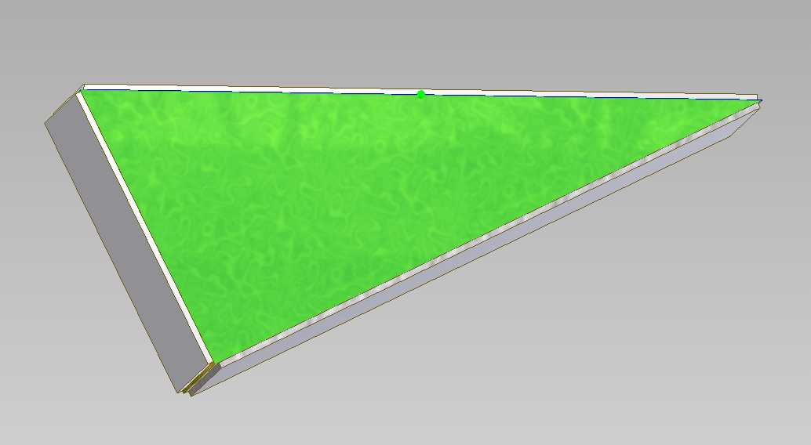
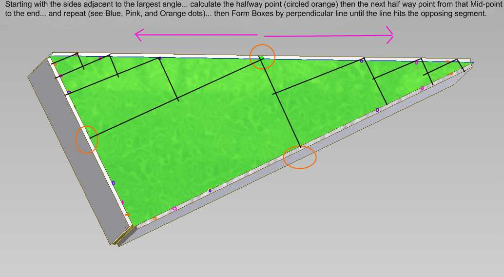
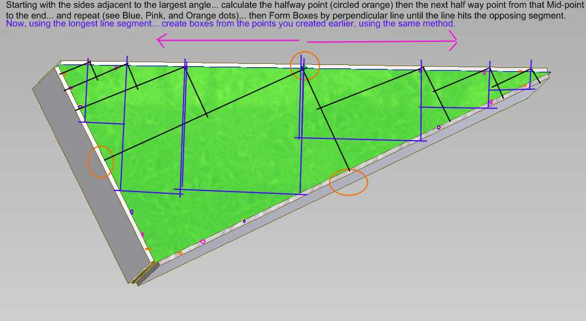
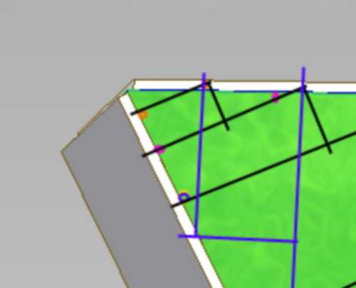

To do this we would need to set up basic rules.
This 3D triangle has 5 sides. Most of the angles are < 90 degs.
We can bound all of the sides that have 4 points in the same plane using the VERY THIN BBOX.

So, we pick a plane that has very close to a box shape (4 points) and bind the entire plane with a very thin box... It will look like this:

We repeat that for all the planes with 4 points that are box shaped...

Notice
the very thin white bounding boxes ... Now ... we just need to do the
triangular sides. Using the same “thin Box method”.
Now... we create a “staircase” in both directions using the sides adjacent to the largest angle formed by the triangle.

Then repeat a similar process for the side Opposite the largest angle.

NOTICE that USER only selects the 3 points in the Triangle to do this... the remainder is automated because it is simply mathematical principles using half way points and perpendicular lines.
Finally... notice we have bounded >90% of the side with this method.

Only the very corner is unbounded. The Amount of this unbounding would be determined by the number of splits you allow.
Alternatively... you could make a function to make a box from the 2 outer most points at that corner...and button most of it up.